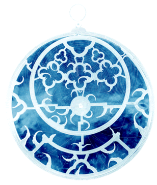

|
It is National Science Week once again at The British Museum. The Department of Conservation and Science along with colleagues from the departments of Ancient Egypt and Sudan, Ancient Near East and Europe are delighted to invite you to an exciting programme in which we reveal the secret life of science and technology in the Museum. Join us as we delve into ancient Egypt, keep warm in the Arctic and explore Stone Age tools. You can also discover unusual ways to tell the time and use the latest technology to illuminate the beautiful objects in the Museum. Programme of eventsMaking the most of Science Week:Meet the ExpertEver wondered what a scientist really does? Is it all white coats and microscopes? Come along and talk to our scientists and conservators during gallery talks, demonstrations and workshops. Find out the real story. It might not be what you expected! Much more hands-onFrom mummies to modern technology, we will show you the inside story of science and technology at the museum. Look down a microscope, touch museum artefacts and find out about X-rays to X-ray Fluorescence. More about science in the MuseumScience Trails Family Trails Adult Trails Trails will be available from the Information Desk. 50p each. New!!! Family Backpacks |

|
| > more exhibitions | >
Department
of Education > Department of Science |